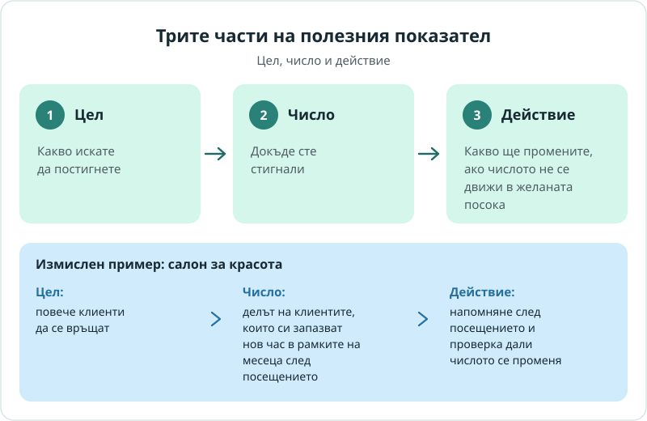
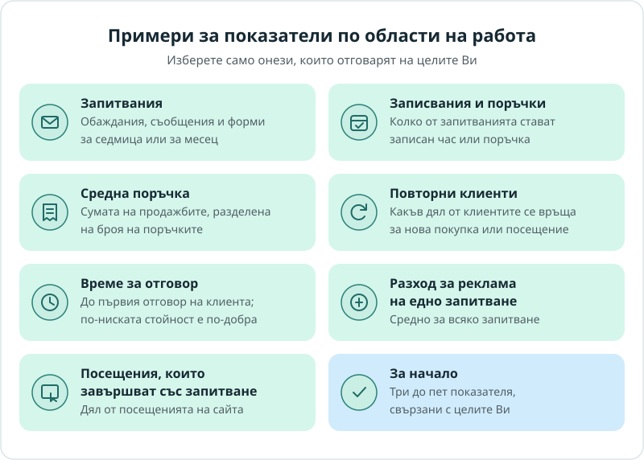

Съвети
Какво е KPI и кои показатели да следи малкият бизнес
KPI е число, свързано с конкретна цел, по което виждате дали бизнесът Ви се приближава към нея. За малък бизнес такова число може да е броят на запитванията за седмица или времето до първия отговор на съобщение от клиент. Когато следите няколко такива числа редовно, по-лесно решавате къде да вложите време и пари.
Автор: Георги ТодоровОбновено
Какво означава KPI?
Съкращението идва от английското key performance indicator, на български ключов показател за ефективност. В документацията на Power BI Microsoft описва ключовия показател като визуален знак, който показва колко сте напреднали към измерима цел.
Полезният показател има три части: цел, число и действие. Целта казва какво искате да постигнете, числото показва докъде сте стигнали, а действието е това, което ще промените, ако числото не се движи в желаната посока.
Измислен пример: салон за красота иска повече клиенти да се връщат. Показателят е делът на клиентите, които си запазват нов час в рамките на месеца след посещението. Ако делът спада, салонът може да добави напомняне след посещението и да провери дали числото се променя.

С какво се различава полезният показател от показателя за самочувствие?
Някои числа изглеждат добре в отчет, но не помагат да вземете решение. На английски ги наричат vanity metrics, а на български можем да ги наречем показатели за самочувствие. Такива често са броят на харесванията, на последователите или на всички посещения на сайта, когато не знаете дали от тях идват клиенти.
Същото число може да стане полезно, когато го свържете с цел. Посещенията на сайта стават полезен показател, когато ги сравнявате с броя на запитванията, които идват от тях.
Добавете показател към списъка си, когато отговаря на следните условия:
- Свързан е с цел, която имате за следващите месеци.
- Ако числото се промени, ще направите нещо различно.
- Можете да го измервате всеки път по един и същ начин.
- Зависи поне отчасти от Вашите собствени действия.
Кои примери за показатели са полезни за малкия бизнес?
Показателите по-долу са подредени по области на работа. Изберете от тях само онези, които отговарят на целите Ви в момента.

- Запитвания. Колко обаждания, съобщения и попълнени форми получавате за седмица или за месец. Полезно е да записвате и откъде е дошло всяко запитване.
- Записвания и поръчки. Колко от запитванията завършват със записан час, резервация или поръчка. Така виждате дали трябва да работите по броя на запитванията или по начина, по който отговаряте на тях.
- Средна поръчка. Общата сума на продажбите за даден период, разделена на броя на поръчките за същия период. За заведение това е средната сметка, а за онлайн магазин средната стойност на поръчката.
- Повторни клиенти. Какъв дял от клиентите се връща за нова покупка или ново посещение. Задържането на клиентите обикновено изисква различни действия от привличането на нови.
- Време за отговор. Колко време минава от съобщението или обаждането на клиента до първия отговор. При този показател по-ниската стойност е по-добрата.
- Разход за реклама на едно запитване. Колко сте платили за реклама средно за всяко получено запитване. В Google Ads подобно число се вижда като цена на реализация, тоест колко средно е струвало всяко отчетено действие, например обаждане или изпратена форма.
- Посещения, които завършват със запитване. Какъв дял от посещенията на сайта води до запитване. Google Analytics нарича ключово събитие всяко действие, което е особено важно за успеха на бизнеса, а Вие избирате кое действие да бъде такова, например изпратена форма.
Финансовите показатели, като печалбата и паричния поток, е добре да ги преглеждате заедно със счетоводителя си.
Как да изберете три до пет показателя?
За начало е по-лесно да следите малко на брой показатели, но да го правите редовно. Три до пет числа се събират на един ред в таблица и се преглеждат бързо.
- Запишете една или две цели за следващите месеци, например повече записани часове или повече клиенти, които се връщат.
- За всяка цел изберете едно или две числа, които показват напредъка към нея.
- Проверете откъде ще идва всяко число: от програмата за резервации, от касата, от рекламния профил или от ръчно броене.
- Запишете как се изчислява всяко число, за да се смята всеки път по един и същ начин.
- Определете кой записва числото и в кой ден.
- Запишете първата стойност като отправна точка и едва след няколко отчитания решете каква цел да си поставите.
Когато знаете отправната точка, по-лесно преценявате каква цел е реалистична за Вашия бизнес.
Колко често да преглеждате показателите?
Честотата зависи от това, колко бързо се променя числото и колко бързо можете да реагирате. Запитванията и времето за отговор се променят от седмица на седмица, затова е полезно да ги поглеждате всяка седмица.
Средната поръчка, повторните клиенти и разходът за реклама на едно запитване имат нужда от повече данни, за да покажат промяна. За тях обикновено е достатъчен месечен преглед.
При всеки преглед запишете едно решение: какво ще промените, какво ще запазите или какво ще проверите до следващия път. Така всеки преглед завършва с конкретна стъпка.
Как да следите показателите с таблица и с табло?
Най-простият начин е таблица в Excel или Google Sheets. Всеки ред е една седмица или един месец, а всяка колона е един показател. В последната колона можете да записвате решението от прегледа.
Таблицата работи добре, докато числата са малко и някой ги попълва редовно. Когато данните идват от няколко програми, като резервации, каса, онлайн магазин и реклами, ръчното пренасяне отнема време и увеличава риска от грешки.
Тогава е полезно табло с показатели (дашборд), тоест екран, който събира основните числа на едно място и ги обновява сам. Xtra AI изгражда табла с показатели и свързва програмите, които вече използвате, така че данните да се попълват автоматично.
Числата за рекламите се виждат в рекламните профили. Ако не искате да ги следите сами, маркетинг специалист може да планира, води и проследява рекламите Ви и да отчита резултатите с числа.
Откъде да започнете, ако искате помощ?
Ако не сте сигурни кои числа да следите или данните Ви са разпръснати в няколко програми, първата стъпка е безплатната диагностика. В нея избирате вида на бизнеса си и отбелязвате проблемите, които познавате.
След нея следва 30-минутен разговор, а после подготвяме оферта с приоритизирани решения и ясна цена за всяко от тях. Едни решения се плащат веднъж, а други месечно. Срокът зависи от решението и го посочваме в офертата.
Диагностиката не Ви обвързва с нищо и работим без дългосрочни договори.
Източници
Често задавани въпроси
Какво означава съкращението KPI?
KPI е съкращение от key performance indicator, на български ключов показател за ефективност. Това е число, по което следите напредъка към конкретна цел на бизнеса.
Каква е разликата между KPI и обикновена метрика?
Метрика е всяко число, което измервате, например посещенията на сайта. Ключов показател е метрика, която сте избрали, защото е свързана с цел и води до решение, когато се промени.
Какви примери за KPI има за малкия бизнес?
Примери са броят на запитванията, делът на запитванията, които стават записан час или поръчка, средната поръчка и делът на повторните клиенти. Кои от тях да следите, зависи от целите на Вашия бизнес.
Колко показателя е добре да следи малкият бизнес?
За начало е по-лесно да следите три до пет показателя, свързани с най-важните Ви цели. Малкият брой числа е по-лесен за редовен преглед, а при нужда можете да добавите нов показател по-късно.
Може ли KPI да се поставят и на служители?
Да, показатели се задават и за отделни служители или екипи, например за времето за отговор на запитвания. Полезно е служителят да може да влияе на числото и да знае как то се изчислява.
Колко струва табло с показатели при Xtra AI?
Цената се определя за всяко решение и зависи от това, какво ще бъде изградено. Посочваме я в офертата след безплатната диагностика и уточняваме дали се плаща веднъж или месечно. Работим без дългосрочни договори.
Свързани услуги
- АвтоматизацииИзграждаме онлайн записване с напомняния, автоматични оферти, документи и фактури, свързани програми и табло с показатели.Научете повече
- Реклама в GoogleКампании в Google Ads, които маркетинг специалист планира, пуска и следи, като Ви показва какво връща всяко вложено евро.Научете повече
- Безплатна диагностикаОтбележете ситуациите, които познавате от своя бизнес, и вижте ориентировъчно колко часа седмично отнемат.Научете повече
Първата стъпка е безплатна
Диагностиката не Ви обвързва с нищо. Показваме Ви точно какво можем да поправим и колко ще струва.